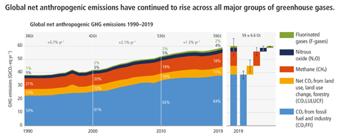
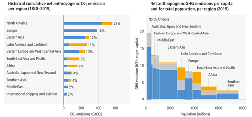
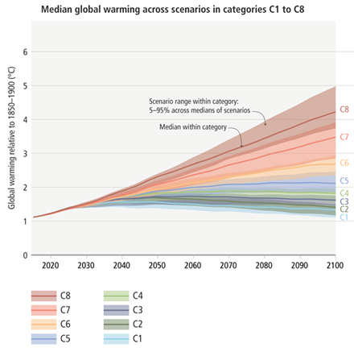

IPCC: Part Three of Sixth Assessment Report: Key Findings
Relevant to Group Sustainability Team
Recently, the United Nations’ climate science body, the Intergovernmental Panel on Climate Change (IPCC) published the third part of its Sixth Assessment Report (AR6).
- This second part of the report was published in March 2022 which was about climate change impacts, risks and vulnerabilities, and adaptation options.
- The first part of this report, on the physical science of climate change was published in 2021. It had warned that 1.5 degree Celsius warming was likely to be achieved before 2040 itself.
Key Findings
Greenhouse Gas Emissions
-
In 2019, global net anthropogenic Greenhouse gas (GHG) emissions were at 5 Gigatonnes of carbon dioxide equivalent (GtCO2e), 54% higher than in 1990.
- Net emissions refer to emissions accounted for after deducting emissions soaked up by the world’s forests and oceans.
-
Anthropogenic emissions refer to emissions that originate from human-driven activities like the burning of coal for energy or cutting of forests.
- This emissions growth has been driven mainly by CO2 emissions from the burning of fossil fuels and the industrial sector, as well as methane emissions.
- But the average annual rate of growth slowed to 1.3% per year in the period 2010-19, compared to 2.1% per year in the period 2000-09.
-
At least 18 countries have reduced GHG emissions for longer than 10 years on a continuous basis due to decarbonisation of their energy system, energy efficiency measures and reduced energy demand.

Emission by the Least Developed Countries
-
Carbon inequality remains pervasive as ever with Least Developed Countries (LDCs) emitting only 3.3% of global emissions in 2019.
-
Their average per capita emissions in the period 1990-2019 were only 1.7 tonnes CO2e, compared to the global average of 6.9 tonnes CO2e.
-
LDCs contributed less than 0.4% of total historical CO2 emissions from fossil fuels and industry in the period 1850-2019.
-
Globally, 41% of the world’s population lived in countries emitting less than 3 tonnes CO2e per capita in 2019.

Pledges to the Paris Agreement
-
Pledges made by countries who have signed the Paris Agreement are known as Nationally Determined Contributions (NDCs).
-
Upon adding up the NDCs announced by countries till October 2021, the IPCC finds that it is likely that warming will exceed 1.5 degrees Celsius (°C) in this century, thereby failing the Paris Agreement’s mandate.
-
The CO2 emissions from existing and planned fossil fuel infrastructure — coal, oil, and gas — contribute greatly to this projected failure.
-
In its best-case scenario, known as the C1 pathway, the IPCC outlines what the world needs to do to limit temperatures to 1.5°C, with limited or no ‘overshoot’.
.
- Overshoot refers to global temperatures crossing the 1.5°C threshold temporarily, but then being brought back down using technologies that suck CO2 out of the atmosphere.
-
To achieve the C1 pathway, global GHG emissions must fall by 43% by 2030.

Low Emissions Technologies
-
Widespread ‘system transformations’ are required across the energy, buildings, transport, land and other sectors, to achieve the 1.5°C target and this will involve adopting low-emission or zero carbon pathways of development in each sector. And solutions are available at affordable costs.
-
The costs of low emissions technologies have fallen continuously since 2010. On a unit costs basis, solar energy has dropped 85%, wind by 55 %, and lithium-ion batteries by 85%.
-
Their deployment, or usage, has increased multiple fold since 2010 — 10 times for solar and 100 times for electric vehicles.
-
Reducing fossil fuel use in the energy sector, demand management and energy efficiency in the industrial sector and adopting the principles of ‘sufficiency’ and efficiency in the construction of buildings are among the plethora of solutions.
Demand-side Mitigation
-
It also adds that demand-side mitigation, i.e., behavioural changes such as adopting plant-based diets, or shifting to walking and cycling “can reduce global GHG emissions in end use sectors by 40-70% by 2050 compared to baseline scenarios” and improve wellbeing.
-
Most of the potential for demand-side mitigation currently lies in developed countries.
Impact on GDP
-
The IPCC states that low-cost climate mitigation options could halve global GHG emissions by 2030. In fact, the long-term benefits of limiting warming far outweigh the costs.
-
Investing in decarbonisation would have a minimal impact on global Gross Domestic Product (GDP).
Short Fall of Finances
-
Financial flows fall short of the levels needed to achieve the ambitious mitigation goals, however.
-
The gaps are the widest for the agriculture, forestry, and other land uses (AFOLU) sector and for developing countries.
-
But the global financial system is large enough and “sufficient global capital and liquidity” exist to close these gaps.
-
For developing countries, it recommends scaled up public grants, as well as “increased levels of public finance and publicly mobilised private finance flows from developed to developing countries in the context of the USD 100 billion-a-year goal; increase the use of public guarantees to reduce risks and leverage private flows at lower cost; local capital markets development and building greater trust in international cooperation processes”.